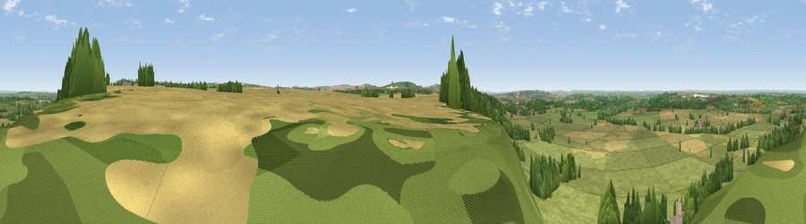

Viewpoint near Clyffe Pypard
#10103 in England · top 16% of its area beats it · near Clyffe Pypard · footpathWhere it is
The exact computed spot (SU 05225 74975). Click the marker for map links.
Public access: a public right of way passes within 10 m of this spot. Computed from Natural England's CRoW access layer and OpenStreetMap rights of way — not the legal definitive map. Always verify locally.
The view, rendered

A 360° render of this exact spot computed from the terrain model, tree cover and land cover — summer colours, afternoon light, calibrated against photographs of famous viewpoints. Real trees, hedges and buildings will differ in detail.
The panorama
Grey silhouette: terrain skyline in each direction (720 bearings, Earth curvature and refraction included). Dashed green: skyline with trees (+15 m) and buildings (+8 m) as obstacles. Blue strip: how far the ground is visible on each bearing.
Where the view opens
Wedge length = distance to the farthest visible ground on that bearing (vegetation-aware). Rings at 10, 25 and 50 km.
What fills the view
62% grassland · 17% woodland · 16% cropland · 5% built-up
Angular shares of the visible panorama (visual magnitude), not map area. Landscape diversity 0.45 (0–1 Shannon).
Key numbers
More beautiful places nearby
The staircase of upgrades: each row has a higher view potential than everything closer. Driving times are estimates from straight-line distance, calibrated against real road routing — check an actual route before setting out.
| Place | Direction | Drive | Score |
|---|---|---|---|
| Viewpoint near Clyffe Pypard | NNE · 0 km | ~1 min | 63.7 |
| Viewpoint near Clyffe Pypard | NE · 3 km | ~8 min | 64.7 |
| Viewpoint near Cherhill | S · 6 km | ~13 min | 71.2 |
| Viewpoint near Cherhill | SSW · 8 km | ~16 min | 73.6 |
| Morgan's Hill | SSW · 8 km | ~17 min | 74.3 |
| Viewpoint near Allington | SSE · 11 km | ~21 min | 75.6 |
| Martinsell viewpoint | SE · 17 km | ~29 min | 76.9 |
| Viewpoint near Nympsfield | NW · 37 km | ~56 min | 77.5 |
51.47371, -1.92616 · source: screening · position refined by local search. Computed location — check access rights before visiting.